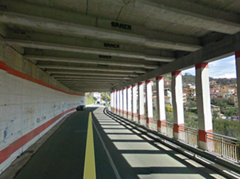
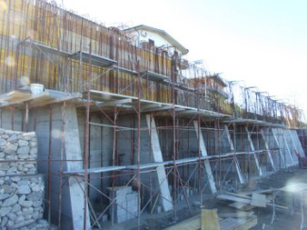
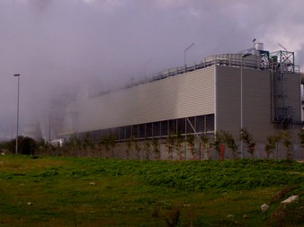
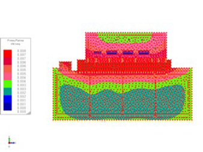

Qui sotto vi proponiamo la galleria di alcuni dei nostri lavori, spaziando tra varie tipologie di commissioni.
Per rimanere aggiornati sul nostro flusso di lavoro potete seguire la nostra pagina Facebook e il canale YouTube
Per rimanere aggiornati sul nostro flusso di lavoro potete seguire la nostra pagina Facebook e il canale YouTube
Strutture in cemento armato
Supporto condensatore
Revamping 2012
Biomasse Crotone S.p.a.


Ripristino viabilità S.P. 51
Provincia di Crotone
Progettazione e D.L.



Progettazione strutturale e geotecnica galleria di sottopasso Gimigliano
Impresa Fratelli Oliveti




Muro di sostegno h = 8.0 m
Area rischio frana R4
loc. Sangue di gatto - Cutro


Vasca di prima pioggia 2000 mc.
Revamping 2012
Biomasse Crotone S.p.a.





Struttura in c.a. supporto torri di raffreddamento
Revamping 2012
Biomasse Crotone S.p.a.